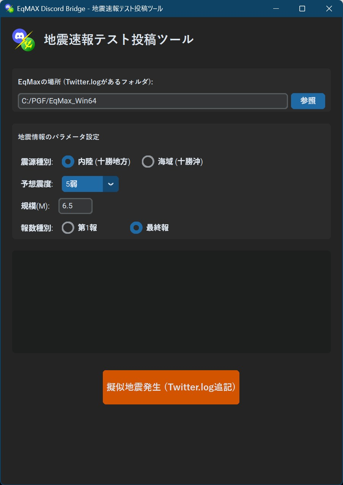

EEWテスト投稿
Discord連携ツールをインストール後、設定がちゃんと動作するかテストできます。
※1，テスト前にEqMax-Discord通知ボットが起動していないと、テスト投稿は反映されません。
※2，あくまでDiscord連携ツールの動作確認であって、EqMax初期設定ツール準拠の設定をしていない場合はEEW発生時に正常に投稿できない可能性があります。
テスト投稿アプリの起動

総合ハブの
テスト投稿 (⑤の部分)を実行してください。 DiscordにWebhook登録

- EqMax.exeを選択します。
- 海域か内陸を決めます※津波リスク判定に影響
- 最大震度を決めます。※震度判定に影響
- 規模(M)を決めます。※津波リスク判定に影響
- 疑似地震発生を押すとその状態でテスト投稿がされます。
Tips：その他
当botシステムの地震の情報による変化。
- 震源が海域か内陸か
- 震源が海域の場合は、津波アラートモードへ、
- M5.9未満アラート「ℹ️海域地震：念のため注意」が付与(Embedエッジ震度階級の色)
- M6.0～ 7.4アラート「⚠️**大規模な海域地震：津波警戒**」が付与(Embedエッジカラー：オレンジ)
- M7.5以上アラート「🚨**【巨大地震・大津波警戒】直ちに避難！」が付与(Embedエッジカラー：赤)
- 内陸時は津波アラート無しの、震度階級モードへ
。
- 最大震度1～7 （Embedエッジカラー：震度に応じて白から赤へ変化）
- 震源が海域の場合は、津波アラートモードへ、